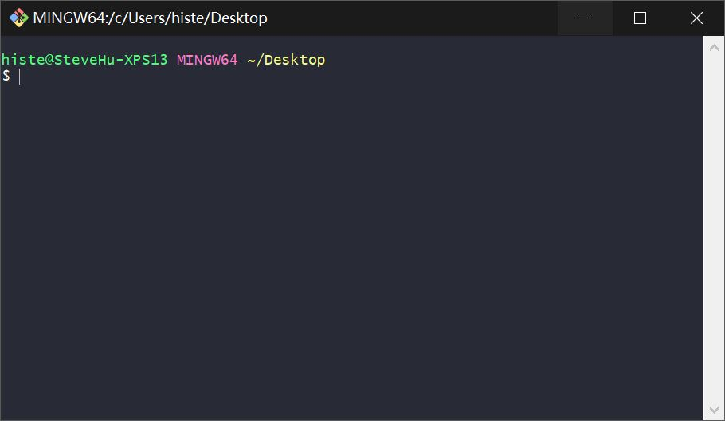

如何使用Hexo和Github Pages搭建网站
简介
这里我们将展示如何使用Hexo框架和Github Pages服务构建网站的方法。
Hexo framework
快速，简单，高效的博客框架
Github Pages 服务
步骤
1. Github 注册
首先注册Github帐户。 如果你有一个，则可以跳过此步骤。
然后新建一个仓库作为网站存放仓库。
记住你申请时填写的Github用户名和电子邮件地址，以及新建的仓库名字。 这些将在下面使用。
2. Git, node.js 安装
Git
验证安装是否成功：
右键单击桌面，单击“Git Bash”，然后拉出一个类似的命令行窗口，表明Git已成功安装

Git 基本设置
在 Git 终端窗口, 输入：
1
2git config --global user.name "Your Name“
git config --global user.email "email@example.com"输入 Github用户名 和 电子邮件地址
Node.js
验证安装是否成功：
Win+R > “cmd” > “node –version”, 如果你能看到版本信息，表明Git已成功安装。
3. Hexo 安装
如果您不是中国用户，可以跳过安装 Cnpm 进入第2小步。
Cnpm 是淘宝的镜像服务，在中国的访问速度比 npm 快。
建议中国用户使用Cnpm 。
打开 Git 终端，输入以下内容进行安装：
1
npm install -g cnpm --registry=https://registry.npm.taobao.org
如果你使用 Cnpm, 键入:
1
cnpm install hexo
如果你不使用 Cnpm, 键入:
1
npm install hexo
4. 基本配置
创建一个新文件夹作为站点根目录
打开文件夹，右键单击并选择 Git Bash Here
在 Git 终端窗口在中, 输入:
1
hexo init
然后我们需要安装插件和主题，这里以hexo-theme-even主题为例，继续输入命令：
1
2
3npm install hexo-renderer-scss --save
npm install hexo-deployer-git --save
git clone https://gitee.com/xiuxiuing/hexo-theme-even themes/even在站点根目录中找到 _ config.yml 文件 并打开它。 将文件的 deploy 和＃URL 部分的内容更改为：
1
2
3
4deploy:
type: git
repo: https://github/username/website_repository_name.git
branch: master1
2
3#URL
url: https://username.github.io/website_repository_name
root: /blog例: 如果你的用户名是“histevehu”并且你的网站Github仓库名是“hi”，那么您的 repo项目和 url项目应为：
1
repo: https://github/histevehu/hi.git
1
url: https://histevehu.github.io/hi
<!> 注意：冒号后面必须有空格，否则无法正确识别。
5. 部署
在 Git 终端, 继续输入：
1
hexo clean && hexo g && hexo d
部署网站，第一次需要在终端中输入帐户和密码。
6. 配置Github页面服务
进入你的网站的Github仓库页面，转到 Settings 选项卡，找到Github Pages 项目，启用该服务。

您还可以绑定自定义域名。例如：

技巧
1.更改主题
下载主题，例如从：https://hexo.io/themes/
提取到网站根目录下的 themes文件夹内的新单独子文件夹中用于存放主题。
Configure themes as the theme name in _config.yml in the root directory
例： 如果你更改成名为 “hiero”的主题，那么你应该在 网站根目录的 _ config.yml 中配置 theme 项，如下所示：
1
theme: hiero
在根目录右键单击，单击“Git Bash”，键入以下内容并执行：
1
hexo clean && hexo g && hexo d
2.常用 Hexo 命令
hexo -g
生成网站
hexo -d
部署网站
hexo g -d
生成并部署网站
hexo server
打开本地服务，允许用户在本地预览网站。
P.S: 如果默认本地端口被占用，你可以在 网站根目录中的 _ config.yml 中进行修改
例 : 更改本地端口为 9090
添加以下代码块到 _config.yml 文件中：
1
2
3
4server:
port: 9090
compress: true
header: true然后测试一下。 在 Git Terminal 中输入命令:
1 | hexo server |
如果终端显示此信息，则表示默认本地端口修改成功。
hexo clean
清理站点缓存，尤其是在您更改主题后应使用此命令